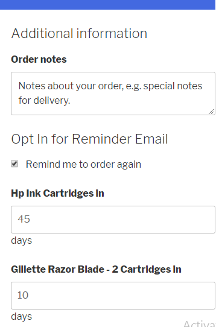

Howdy !!!
Thank you for purchasing WooReminder plugin. If you have any questions that are beyond the scope of this help file, please feel free to email at contact@wptowncenter.com Thanks so much!
Introduction
WooReminder is a WordPress plugin built for WooCommerce. WooReminder boosts sales of your WooCommerce Shop by sending reminder Email to customers to re-order items/products that they have purchased earlier in your shop.
Shop admin has to set reminder days(How many days after the purchase of product a reminder should be sent) for products. WooReminder will take care of sending reminder Emails to customers. WooReminder act as virtual IoT re-order button for your online shop, meaning there is no physical button at all present in this case. Instead, WooReminder sends Email and make the customer buy from your shop with email links present on reminder mail. WooReminder is a must have plugin for shops which use WooCommerce to sell daily consumable product categories like Groceries, Cosmetics, Foods & Supplements etc.
How Does it works?
It's very simple
- Reminder days for products are set first
- When a customer purchases products which are enabled for reminder, then those will be added as reminder in WooReminder List
- Once the reminder day is reached, an email will be sent to customer
- Customer re-order/buys the product again in your shop from the email link.
- That's it. Above is the basic concept, but there are follow-up email if the customer is not buying from initial email.
Quick outline on Setup
Ok cool. You bought the plugin, what now? WooReminder comes with default settings and default email templates.
You can start using the plugin in short time.
Just follow the below steps to get going.
- First Install and activate the plugin
- Set Reminder days for each product at WooCommerce Product edit page.
- That's all.
- Really that's all, you can get going with default settings.
- However it is recommended to change the email templates, and settings according to your site.
- Please check the below detailed sections about each setting/features.
Installation & Activation
A WordPress Plugin can be installed by any one of the below
- Automatic Installation
- Manual Installation
Automatic Installation - Recommended
To do automatic installation follow the below steps.- Login to your WordPress Website Dashboard
- Navigate to Plugins > Add New
Click on Upload Plugin then browse woo-reminder.zip file which you should have downloaded from codecanyon.net and click Install Now
You should see a Plugin installed successfully message as below.
- Upon successful installation, click Activate Plugin to activate it. That's it.
Manual Installation
There are cases where Manual Plugin Installation is appropriate. Eg: You server does not allow WordPress to install Plugin, write permission etc. Installing a WordPress Plugin manually requires FTP familiarity, you could edit/delete other folders of your WordPress installation by mistake. This method is not recommended. To do manual installation follow the below steps.
- Extract woo-reminder.zip to woo-reminder in your desktop
- Use any FTP client of your choice to upload woo-remainder plugin files to your Installation. FileZilla is recommended one.
- Connect to your WordPress installation and navigate to wp-content/plugins folder in your WordPress directory online
- Transfer woo-reminder directory to your plugin folder online
- Once Transfer is finished, Go to your plugin screen in WordPress dashboard.
- Find WooReminder and click Activate. That's it.
WooReminder Settings Page
WooReminder Settings can be accessed by navigating to Dashboard menu -> WooReminders
Reminder Days Setup
WooReminder works only with simple and variable products
You can set reminder days for each product by going to product edit page and set the reminder days for simple and variable products.
In order to set the reminder to a product, the reminder should be enabled first and then we can set a number of days after the purchase a reminder should be sent.
This can be found on product edit page under section product data General Settings
Below image is an example of simple product

Enabling reminder for the variable product is same as simple product, Reminder days for each variation can be controlled separately. Reminder days settings can be found in each variation.
but you can control the reminder enable/disable for each variation by leaving the reminder days to empty or 0. Doing so will disable reminder for the particular variation alone.
This can be useful in some cases where you aren't sure the usage volume of that particular variation or you simply don't want the reminder for that particular variation.
Below images are example for variable product
IMPORTANT TIPS
You should determine the number of days exactly a product might be consumed on an average usage.
Because setting on early days will frustrate your customer by getting too many emails before they run out of that product. Similarly setting late days will result in your customer could have bought the product somewhere before they get the mail.
Setting a likely reminder days plays a major role in getting re-order.
If we didn't set it correctly then outcome from this plugin might not be great.
Reminder List
As the name is self-explanatory, this is where all the reminders are shown.
Once an order is completed and if it has reminder enabled product, then those reminders are added to reminder list on order completion. This will happen only on order completion because there is no point in adding a reminder campaign before the product reaches customer's hand. Who knows just in case if shipping gets delayed and reminder mail sent before the actual product reaches customer then think of how angry a customer will be in.
This is the reason reminder are added only when an order is completed.
Column Names & its Details
| ID | WooReminder ID - Reference for reminders in WooReminder List |
| Order ID | WooCommerce Order ID. This explains from which WooCommerce Order this reminder is created. |
| Billing Name | Customer billing name entered at checkout |
| Customer billing email entered at checkout | |
| Product ID | ID of a product which customer bought, this is useful to identify a product if its name is changed multiple time. |
| Product Name |
Product Name are the name stored in reminder table at the time of order placement. So in future, if you change a product name it name won't be changed here. This is why product ID is given to identify a product.The product name is stored in reminder table to show product name without looking product name from other table each time of retrieval(Done to achieve performance in admin page)
However, when using the [product_title] in mail template, will always fetch current title of the product. |
| Email Date | Email Date is the date at which the reminder email is about to be sent. |
| Reminder Status | Has two statuses. 1.Active 2.Finished(When a reminder is finished no Emails will be sent and no further actions happen). |
| Reminder Logs | can be seen with |
| Reminder can be deleted with | |
Email Template(Main/Initial Email Template)
This is the email template which used for initial mail at reminder email date. So when a reminder date is reached, this email template will be used for email.
It is advisable to check and setup your content according to your shop for email templates. Give content are generic.
Follow Up Email
Follow Up Emails are sent after initial reminder mail date. For Example: if a reminder is about to send on 2017-07-06 then if you have a followup template with 10 days after default email reminder then the mail could be sent on 2017-07-16
Followup Email is powerful but don't overdo multiple followup e-mails. Too many followups can frustrate your customer.
We would suggest to have just two followups with the last one with some exciting offers. If a customer is not buying even with offers, then there is no point in sending more followups.
By default there are two followups emails with the second being disabled because it contains a dummy coupon code, this is done to give you an idea. You can delete it or use your own content with your coupons are all up to you. If a followup up email template status is disabled then no email will be sent from that template.
All the give content on email template are just to get you started. You can use your own content which suits your site and don't forget to replace real coupon code in the second email template or remove it completely to avoid customer coming to your site saying coupon SHOP5 doesn't work. SHOP5 is dummy text to give you some idea.
Special/Replaceable Codes in Mail Template
[site_title_wrmdr]- for Site Name[first_name]- for Customer First Name[last_name]- for Customer Last Name[re_order_url anchor="Link"]- for re-order link, where the anchor is for anchor text for the link[ordered_date]- for showing ordered date[wrmdr_unsubscribe_url anchor="Link"]- Customer can unsubscribe from the reminder. By clicking this link.
Settings
You can just start running WooReminder with defaults settings itself, in case if you wanted to play around below are the details of settings
Select when do you want to mark the reminder as finished. For some people, it makes sense to mark it as finished as soon customer landed to your website from reminder email. Because once they come and they abandoned the cart without purchasing there is no point in keeping the reminder as active and keep sending mail. It is up to you. So we given the option to you.
Select where you want the customer to land on your site from reminder emails. Each option has their merits and demerits in terms of customer navigation.
This is an important setting, please pay close attention. Mail Campaign Interval is nothing but CRON.
What is CRON?
CRON is a time-based job scheduler in Unix-like computer operating systems. which run specified task/program at a specified time.
How will it be useful here? - We can't simply check for reminder mails to be sent and send them email all the time. So we have the interval to check and send reminder emails. This interval is controlled in this setting.
Setting it as Twice daily will check for reminders to be sent and send reminder mail two times a day. Similarly setting Hourly will check and do mail task every hour.
Recommended Mail Campaign Interval - Twice daily or 8 hours in the custom interval option(Which will run 3 times a day).
See Advanced CRON inforamtion below to get more details about wordpress Cron and setting up server Cron
You can use WooCommerce email template style or you can use plain email template style. When you are using the WooCommerce mail template you need to input header title.
Reminder Opt In Settings
You can show an reminder opt-in section for customer at checkout. If you didn't show this section then by default all the customer will be automatically opted-in. In some countries, there are laws to get customer interest consent with this acknowledge before adding them to mailing list and mailing. If you are in one those countries, you don't need more explanation on this.
In V1.5 Customer can change the reminder days according to thier usage. By default it will show the admin set date.
Debug
Test email can be sent using the debug section. This is used to test whether your mail server is working or not.
There are multiple plugins available to check the mail system working on your server.
WooReminder uses WordPress wp_mail() functions to send mail. So if you have SMTP or other mail configured to wp mail via any plugin then those will work fine with WooReminder.
CRON - Advanced
WordPress CRON are Virtual
WordPress Cron is not true Cron. Cron is executed only when the site is accessed. WordPress will check for Cron jobs to run only when any page is requested either from visitor or bot.
So for example if a cron job is scheduled to send mail on 4 PM 2017-07-05 and there is no visit to your site till 2017-07-06 then there won't be mail sent till 2017-07-06 because the scheduled job hasn't at all run till 2017-07-06.
So mailing reminder on time is not guaranteed with WordPress Cron
How to send mail on Time
You can disable WordPress Cron and run your server cron to achieve on time mailing.
There are multiple server control panel or multiple hosting companies give different interface to set any cron. Giving step for all those are out of scope.
We'll give you an outline to set real cron.
The idea is we are trying to hit the website cron file at an interval with help of server and disabling WordPress cron which check on every page request.
- First open your
wp-config.phpfile and place the codedefine('DISABLE_WP_CRON', 'true');after database settings lines and save it. - Login to your Cpanel
- Look for Cron Jobs, this will be under advanced sections in most Cpanel

- Add new Cron job and select interval which you are interested

- In the command section add the following with your username and site name
wget http://www.YOURSITE.com/wp-cron.phpORcd /home/USERNAME/public_html; php -q wp-cron.phpuse the directory where WordPress is installed - Hit save, you should see new Cron created successfully message. That's it.
Stats and Info
This section contain how WooReminder is doing(Over all re-order count, revenue which got with help of WooReminder etc) and what template makes more return or open counts.
Which will help you in deciding which mail template is working good, does template with coupons work really well etc.
Information like what are the template tags that can be used in email templates are shown here.
Order Action
You can send re-order reminder notification manually by order action "Send Re-order Reminder Notication" can be seen at WooCommerce Order page under Order actions
What this action does is, it add the items to reminder list if not present and then send default mail immediately. So this can be used to add order items which were missed before installing this plugin. But be sure to enable reminder for products. Because it adds items to reminder list only if product is enabled for remider and send notification only to items which are added in reminder list.
Server Requirement
First of all WooReminder needs WordPress and WooCommerce installed up and running. In general, WordPress and WooCommerce require the minimum requirement as below and same is required for WooReminder too.
- PHP 5.6 or greater
- MySQL 5.6 or greater
- WP Memory limit of 64 MB or greater (128 MB or higher is preferred)
Browser Requirement
When it comes to adding product reminder in reminderlist WooReminder does not require any browser support, however when it comes to working with WooReminder admin section it is recommended to use the following browsers and WooReminder admin sections supports only the below browsers.
All the latest version of Chrome, Firefox, Safari, and Safari for iOS, as well as Internet Explorer versions 9-11.
Change logs
- V 1.4 - 02 Jun 18 * Feature: Reminder days can be set by customer at checkout page. In order to use this feature, enable the Show Reminder Opt-In on Checkout in settings page - V 1.3 - 16 Oct 17 * Feature: Unsubscribe Shortcode - [wrmdr_unsubscribe_url anchor="Link"] added in mail template. Customer can Unsubscribe to particular reminder by the link present in the mail template. * Feature: Orddered date Shortcode - [ordered_date] added in mail template. * Feature: Reminder Opt-In option can be provided for customer in checkout page. * Fix: Double mail sent when reminder added from order page is fixed. - V 1.2 - 27 Aug 17 * Feature: added "Use / Inherit WooCommerce Mail Template Style" to use WooCommerce Mail template for all mails. * Fix: If same product is added by same user before reminding day, then the old reminder will be removed from reminder list and new reminder will be created with new reminder date. - V 1.1 - 30 July 17 * Feature: added "Send Re-order Reminder Notication" in WooCommerce Order action to send mail instantly. Should be used only when you think they need re-order. - V 1.0 - 12 July 17 * Initial Release
Support
Feeling lost in dessert without any support? Don't worry we got you covered. Please feel free to Shoot us a mail to contact@wptowncenter.com in case if you have any queries related to WooReminder. Thanks Again :)